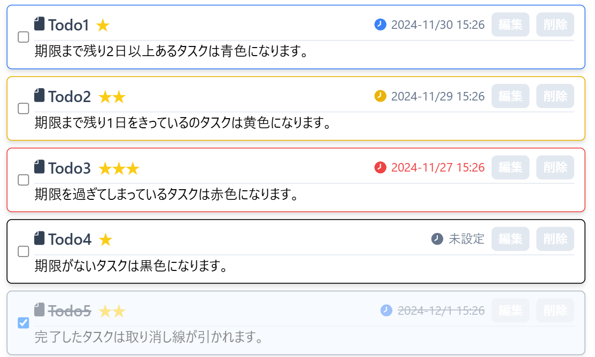

Todoアプリ
このアプリについて
Todoリストを作成、管理するアプリです。
公開中のアプリ
アプリのUI
アプリの機能
以下に示されるようなTodoアプリとしての基本的な機能を実装しています。- Todoの追加
- Todoの削除
- Todoの完了状態の変更
- Todoの編集
- Todoの保存と読み込み
Todoの保存と読み込みは、ブラウザのローカルストレージを使用して実装しています。
これにより、ページを再読み込みしてもTodoの状態が保持されます。
基本的な機能のほかに「嘘」機能を実装しています。
Todoを追加する際に、「嘘」にチェックすると嘘のTodoとして追加されます。
嘘のTodoは、通常のTodoとほとんど変わらないように表示されます。
通常のTodoと優先度の星の色が異なるので見分けることが可能です。
嘘のTodoは、通常のTodoと違い、完了状態の変更や削除の操作ができません。
そのため、嘘のTodoを追加する際は慎重に行う必要があります。
また、嘘のTodoに操作を行おうとすると、煽られます。
嘘のTodoに期限を設定すると、期限が過ぎた時に自動的に消えます。
使用技術
- React
- TypeScript
- Tailwind CSS